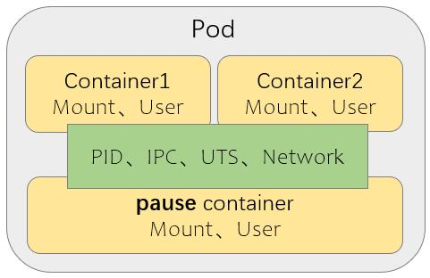
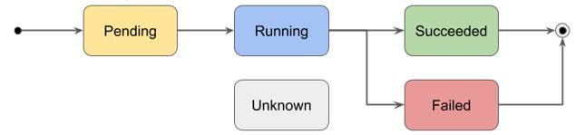
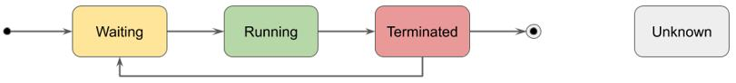
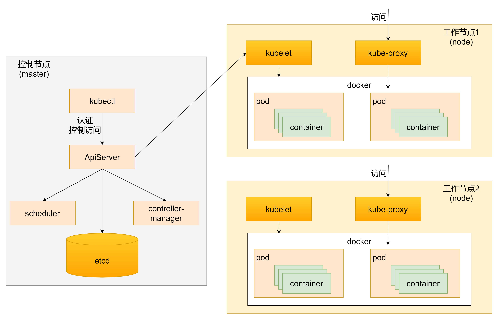

Pod 基础
什么是 Pod？
-
Pod 是一组（一个或多个）紧密关联的容器集合，是Kubernetes调度的基本单位。
-
同一个 Pod中的不同容器共享 PID、IPC、Network 和 UTS namespaces
-
另外封装的内容：可被该组容器共享的存储资源、网络协议栈及容器的运行控制策略等
-
依赖于pause容器事先创建出可被各应用容器共享的基础环境
-
每个pod中都可以包含一个或多个容器，这些容器可以分为两类
-
用户程序所在的容器，数量可多可少
-
Pause容器，这是每个Pod都会有的一个根容器，它的作用有两个
- 可以以它为根据，评估整个pod的健康状态
- 可以在根容器上设置IP地址，其他容器都以此IP（Pod IP），以实现Pod内部的网络通信
-
Pod 的组成形式
-
单容器Pod：仅含有单个容器
-
多容器Pod：含有多个具有“超亲密”关系的容器
- 同一Pod内的所有容器都将运行于由Scheduler选定的同一个节点上

Pod 资源规范的基础框架
在 k8s 中所有资源的一级属性都是一样的，主要包含5部分：
-
apiVersion：# 版本，由k8s内部定义，版本号可以用 kubectl api-versions 查询到
-
kind: # 类型，由k8s内部定义，可以用 kubectl api-resources 查询到
-
metadata: name: # Pod 的标识名，在名称空间中必须唯一；
-
spec: # 配置中最重要的一部分，里面是对各种资源配置的详细描述
- containers: # 定义容器，它是一个列表对象，可包括多个容器的定义，至少得有一个；
- nodeName: #根据nodename的值将pod调度到指定的Node节点上
- nodeSelector: # 根据NodeSelector中定义的信息选择将该Pod调度到包含这些label的node上
- hostNetwork: # 是否使用主机网络模式，默认为false，如果设置为true，表示使用宿主机网络
- volumes: # 存储卷，用于定义Pod上面挂载的存储信息
- restartPolicy : # 重启策略，表示Pod在遇到故障的时候的处理策略
-
status: # 状态信息，不需要人为定义，K8s 会自动生成
pause 容器无需定义
- 下面是一个简单的Pod资源示例
apiVersion: v1
kind: Pod
metadata:
name: nginx
namespace: default
spec:
containers:
- name: nginx
image: nginx:latest
Pod 资源的可配置内容非常繁多，因此要一个一个记住是不现实的。对此，K8s 提供了能够查看每种资源的配置项的命令
kubectl explain 资源类型 #查看某种资源可以配置的一级属性
kubectl explain 资源类型.属性 #查看属性的子属性
例如：
kubectl explain pod
kubectl explain pod.metadata
如何通过Pod对象定义支撑应用运行
-
环境变量：
- 直接设置值。
env: - name: HELLO value: WORLD- 读取 Pod Spec 的某些属性。
env: - name: POD_NAME valueFrom: fieldRef: apiVersion: v1 fieldPath: metadata.name- 从 ConfigMap 读取某个值。
env: - name: VARIABLE1 valueFrom: configMapKeyRef: name: my-env key: VARIABLE1- 从 Secret 读取某个值。
env: - name: SECRET_USERNAME valueFrom: secretKeyRef: name: mysecret key: username
Pod 的生命周期
我们一般将Pod对象从创建到终止的这段时间范围称为Pod的生命周期，它主要包含下面的过程：
-
pod 创建过程
-
运行初始化容器（init container）过程
-
运行主容器（main container）
- 容器启动后钩子（post start）、容器终止前钩子（pre stop）
- 容器的存活性检测（liveness probe）、就绪性检测（readiness probe）
-
pod 终止过程
我们可以通过kubectl explain pod.status命令来了解关于Pod的一些信息，Pod的状态定义在PodStatus对象中，其中有一个phase字段，下面是phase的可能取值：
- 挂起（Pending）:Pod信息已经提交给了集群，但它尚未被调度完成或仍处于下载镜像的过程中。
- 运行中（Running）:Pod已经被调度到某节点，并且所有容器已经被Kubectl创建完成。
- 成功（Succeeded）:Pod中的所有容器都已经成功终止并且不会被重启。
- 失败（Failed）:所有容器都已经终止，并且至少有一个容器是因为失败终止，即容器返回了非0值的退出状态或被系统终止。
- 未知（Unknown）:API Server无法正常获取到Pod对象的状态信息，通常由于网络通信失败所导致。
Pod 的 phase

对比：容器的状态

Pod 的创建过程

- 用户通过 kubectl 或其他 api 客户端提交需要创建的 pod 信息给 apiserver
- apiserver开始生成pod对象的信息，并将信息存入etcd，然后返回确认信息至客户端
- apiserver开始反映etcd中pod对象的变化，其他组件使用watch机制来跟踪检查apiserver上的变动
- scheduler发现有新的pod对象要创建，开始为pod分配主机并将结果信息更新至apiserver
- node节点上的kubelet发现有pod调度过来，尝试调用docker启动容器，并将结果返回送至apiserver
- apiserver将接收到的pod状态信息存入etcd中
Pod 的终止过程
- 用户向apiserver发送删除pod对象的命令
- apiserver中的pod对象信息会随着时间的推移而更新，在宽限期内（默认30s），pod被视为dead
- 将pod标记为terminating状态
- kubelet在监控到pod对象转为terminating状态的同时启动pod关闭进程
- 端点控制器监控到pod对象的关闭行为时将其从所有匹配到此端点的service资源的端点列表移除
- 如果当前pod对象定义了prestop钩子处理器，则在其标记为terminating后即会以同步的方式启动执行
- pod对象中的容器进程收到停止信号
- 宽限期结束后，若pod中还存在仍在运行的进程，那么pod对象会收到立即终止的信号
- kubelet请求apiserver将此pod资源的宽限期设置为0从而完成删除操作，此时pod对于用户已不可见
初始化容器
初始化容器Init Container是在Pod的主容器启动之前要运行的容器，主要是做一些主容器的前置工作，它具有两大特征：
- 初始化容器必须运行完成直至结束，如果某个初始化容器运行失败，那么Kubernetes需要重启它直至成功完成。
- 初始化容器必须按照定义的顺序执行，当且仅当前一个成功之后，后面一个才能运行。
初始化容器有很多应用场景，下面列出的是最常见的几种：
- 提供主容器镜像中不具备的工具程序或自定义代码。
- 初始化容器要先于应用容器串行启动并运行完成；因此可用于延后应用容器的启动直至其依赖的条件得到满足。
Pod的重启策略：决定了容器终止后是否应该重启
3种重启策略：
- Always：无论何种exit code，都要重启容器
- OnFailure：仅在exit code为非0值（即错误退出）时才重启容器
- Never：无论何种exit code，都不重启容器
重启策略适用于Pod对象中的所有容器，首次需要重启的容器，将在其需要的时候立即进行重启，随后再次重启的操作将由kubelet延迟一段时间后进行，且反复的重启操作的延迟时长以此为10s、20s、40s、80s、160s和300s，300s是最大的延迟时长。